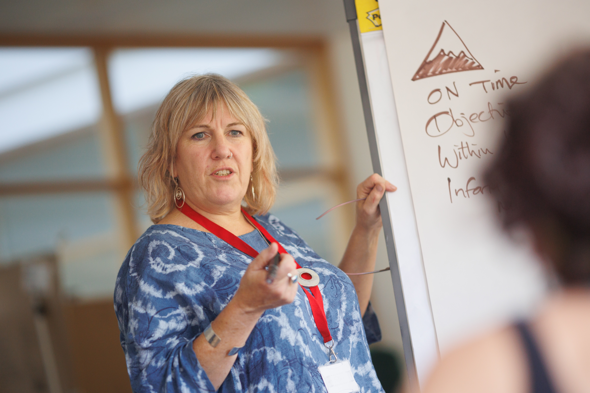

“I will be me”-- Go and Get it!
With a resolute spirit of "go and get," I envision a future shaped by the relentless pursuit of my passions. Having discovered my interests and explored the fields and activities that ignite my enthusiasm, I am now armed with a clear vision for my career path. I understand that my aspirations require dedication and effort, and I am prepared to go the extra mile to achieve them. This vision isn't just a distant dream; it's a roadmap guiding me towards a future where I turn my ambitions into reality, driven by the determination to go and get what I truly desire.
User Experence (UX) Designer
UX researchers conduct in-depth research to understand user behavior, preferences, and pain points. They design and execute user studies, surveys, interviews, and usability tests. They analyze data to generate insights that inform the design and improvement of digital products. Need strong research and analytical skills, empathy for users, knowledge of research methods, data analysis tools, and the ability to communicate findings effectively.

Educational Technologist
Educational technologists work in the education sector, designing and implementing technology-based solutions for learning. They create digital learning materials, e-learning platforms, and educational apps. They ensure that technology enhances the educational experience, making it engaging and effective.

Healthcare User Experience Specialist
Specialists in healthcare UX focus on improving the usability and user experience of healthcare software, medical devices, and electronic health records. They ensure that these tools are efficient, user-friendly, and compliant with healthcare regulations. Skills: Knowledge of healthcare workflows, medical terminology, HIPAA compliance, usability testing in healthcare settings, and an understanding of the needs of healthcare professionals and patients.